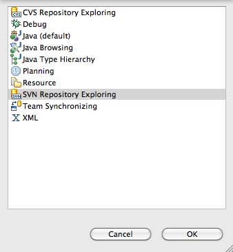
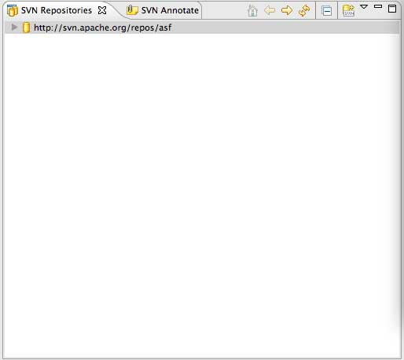
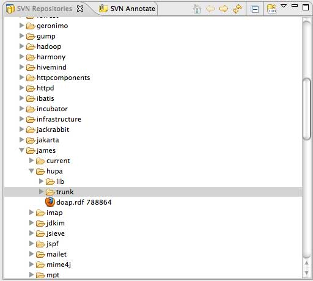
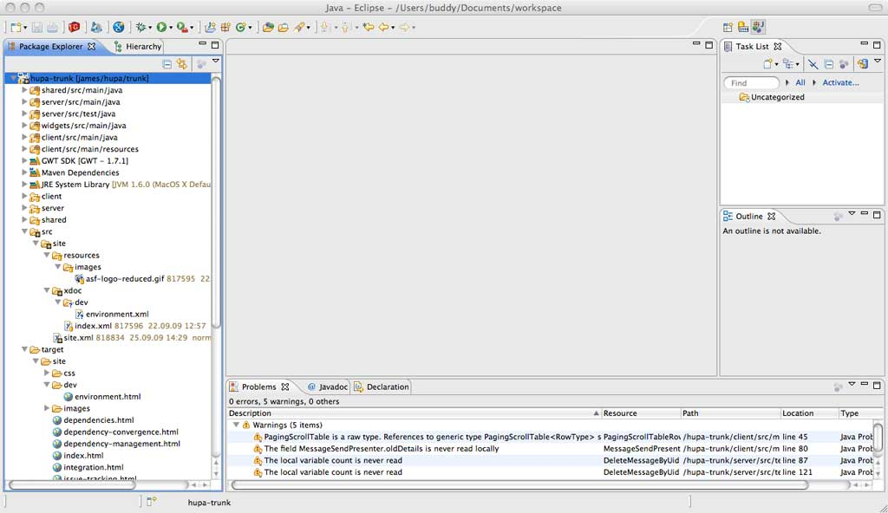

Great! Hupa is a new project, which just made it from the labs over to the james project. We have a solid codebase, but there are many features missing. But you already know that, right? At least that is why you are trying to help, correct?
So, what do you need... We develop in eclipse, hence this document describes how to setup eclipse, to get a Hupa Development Environment up and running. So if you are a developer who is using netbeans or any other IDE like IntelliJ IDEA, don't hesitate, to tell us how you setup your Environment, and we will be more than happy to include the documentation as well.
This document describes which steps are needed to setup eclipse, as if it was freshly downloaded. So if you already have some plugins installed, skip over to the next section. Other than that, all that is left for is to wish you guys fun coding Hupa!
Eclipse can be downloaded from the eclipse download page I recommend using the Eclipse IDE for Java Developers or the Eclipse IDE for Java EE Developers.
If you need help installing eclipse, you can find the answers you are looking for on the eclipse homepage
From this point on we assume you have a running distribution of eclipse installed on your system.
Hupa uses maven2 as its build tool. Although it is possible to only run maven commands from the command line, a tight integration into the tool you use to write and run the code is a lot nicer.
Nowadays there is more than one plugin for eclipse to interact with maven2. Although all might be great, I only know my way around the m2eclipse plugin. I work with it on all my m2 projects, and it provides me with the tools I need to get the job done. Again, if you provide the documentation for other plugins, we would be more than happy to put them up here.
But enough of the bla bla let us get started. You can download the plugin here. The Installation Instructions are right on the first page. From this point this guide assumes that you have the m2eclipse plugin installed.
Hupa is developed using GWT So to make your development a lot easier we recommend installing the google plugin for eclipse
The ASF uses subversion as its Version Control System (VCS). So to be able to check out the source code I recommend using a special plugin called subclipse After subclipse is installed, it is fairly easy to start your development on Hupa :)
Now we have everything setup to be able to check out and run the Hupa source code.
Open up Eclipse and go to Window -> Open Perspective -> Other -> SVN
Repository Exploring

In the SVN Repositories View Click the right mouse button and choose
New -> Repository Location ...
In the Dialog enter the following url in the URL Field:
http://svn.apache.org/repos/asf then click on Finish. After that the
ASF Software Repository should be visible inside your SVN Repositories
view as shown here.

Expand the Repository, then james, then hupa, and finally do a right
click on trunk and select Checkout. Fill in the settings as you think
they fit your needs.

So after everything is set up correctly your screen should look like
this one here.

Now, that the foundation is laid out, we can finally build hupa .